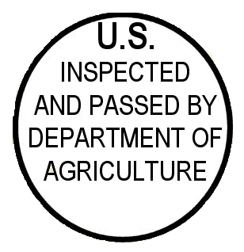

Welcome to Hawaiian Cowboy Snacks. We are glad you made it.
We're confident you'll love our jerky. That's why we back it up with a 100% money back guarantee. If you're not satisfied, for any reason, let us know within 7 days of receiving your order and we will make it right!
We are USDA approved, licensed and inspected facility. We also carry the Japanese export label.
You can expect free shipping with every US and APO order.
Please ask us about our FUNDRAISING prices. If you have a fundraiser, try Hawaiian Cowboy Beef Jerky! We give a great margin for those working their okole (butts) off to make that quota! Let us help you make some serious money with our jerky. Send us an email, and we will get right back to you.